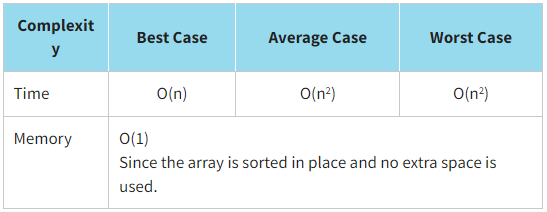
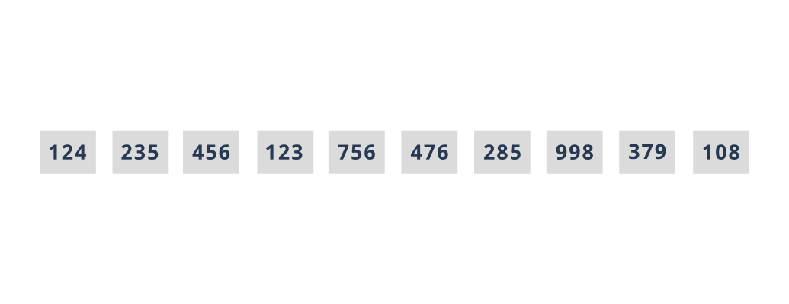

Bubble sorting
Bubble Sort is the simplest sorting algorithm. We compare pairs of adjacent elements and swap them if they are not in the correct order. As a result of the first step, it turns out that the largest element moves to the end of the array. At the second stage, the second largest element following it moves to the penultimate place, and so on.
To reduce the number of N iterations, if an array is partially sorted, we can use a flag that keeps track of whether we have swapped any element in the last iteration. If no elements have been swapped, this means that the array is already sorted and you can stop iterating earlier. This turns bubble sort into an adaptive sort algorithm.
Let us sort our array of library cards using the bubble sort. Recall that the values of library cards are {124,235,456,123,756,476,285,998,379,108}.
Look at the program implementation of the bubble sort.
JavaScript realisation
function bubbleSort(arr) {
let count = 0;
let needIteration = true;
while (needIteration) {
needIteration = false;
for (let i = 0; i < arr.length; i++) {
for (let j = 0; j < arr.length - i - 1; j++) {
if (arr[j] > arr[j + 1]) {
const temp = arr[j + 1];
arr[j + 1] = arr[j];
arr[j] = temp;
count += 1;
needIteration = true;
}
}
}
return count;
}
}
const initData = [124, 235, 456, 123, 756, 476, 285, 998, 379, 108];
console.log(`Initial array:`, initData);
const iterationsTestData = bubbleSort(initData);
console.log(`The number of permutations is: ${iterationsTestData}`, `\nSorted array:`, initData);
The result:
Initial array: [ 124, 235, 456, 123, 756, 476, 285, 998, 379, 108 ]
The number of permutations is: 20
Sorted array: [ 108, 123, 124, 235, 285, 379, 456, 476, 756, 998 ]
You should choose the bubble sort when:
- an array is partially sorted as the bubble sort is adaptive
- an array to be sorted is relatively small
- a simple sorting implementation is desired
- there are limits on memory usage
Video:
Bubble SortBubble Sort Algorithm